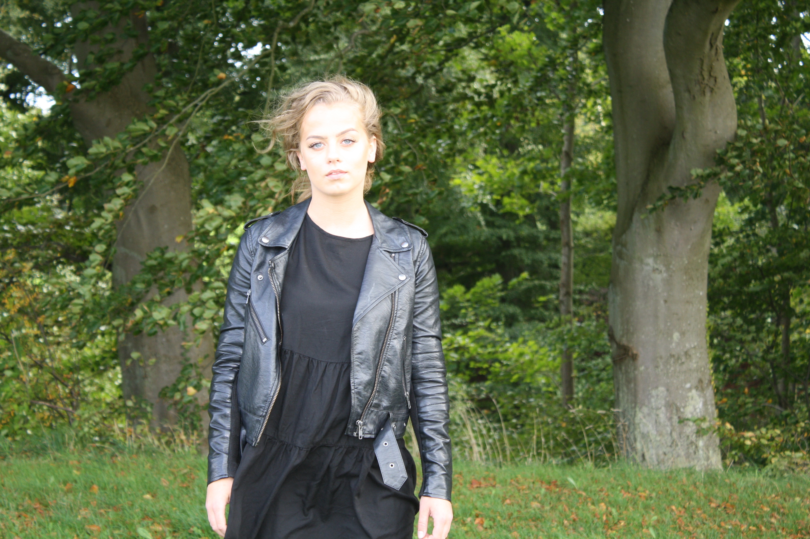
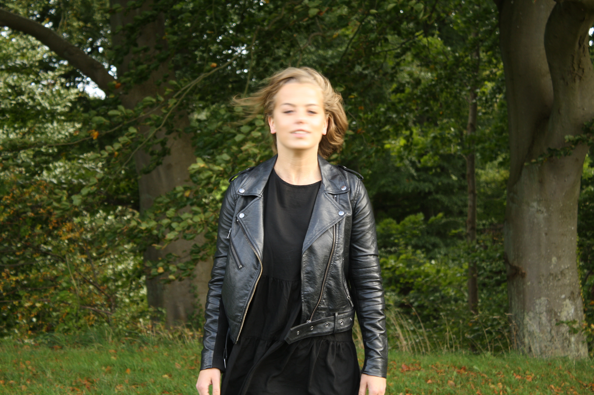

En blænde er en åbning i et optisk instrument, der regulerer mængden af lys, der lukkes ind. Man kan mindske lysmængden ved at mindske åbningens størrelse.
Blændeværdien opgives i såkaldte blændetal. En standard blænderække kunne være 2, 2.8, 4, 5.6, 8, 11, 16 og 22 i et kameraobjektiv. Springene på blændetallene repræsenterer en halvering eller fordobling af lysmængden pr trin, også kaldet f-stop. Jo større et tal i blænderækken jo mindre lysmængde bliver lukket ind i objektivet, og man har derfor terminologien, at man blænder op, når man bruger et mindre blændetal.
Tallet springer i teorien med en faktor på √2 for hvert trin, og hænger sammen med, at blændetallet beskriver diameter mens det tilsvarende lysindfald hænger sammen med åbningens areal.
Praktisk udførelse: I nogle tilfælde er blændeåbningen en fast plade med en målsat åbning. Det gælder f.eks. hulkameraer, som ikke har noget egentligt objektiv, men udelukkende en blændeåbning placeret foran et filmplan. Man kan vælge en hulstørrelse, som kompromis mellem skarphed og eksponeringstid.
I almindeligt fotoudstyr er blænden anbragt i objektivet og består typisk af små lameller, som kan drejes og dermed regulere åbningen. Man anser cirkelrunde blændeåbninger for at give de bedste fotografiske resultater, og derfor betragter man ofte antallet af lameller som et kvalitetskriterium, fordi flere lameller giver mere runde åbninger.


ISO, også kaldet filmfølsomhed, i den fotografiske verden, er en international målenhed baseret på ISO12232, som angiver fotografiske films og digitale billedchips lysfølsomhed eller mere populært, hastighed. En højere lysfølsomhed tillader kortere lukketider med den samme blænde. Man kan derfor undgå bevægelsesuskarphed og rystede optagelser uden at skulle anbringe kameraet på et stativ.
Høj ISO giver billedet en grynet effekt, men kræver kun lidt lys, mens lav ISO giver billeder med flere detaljer, dog kræver dette meget lys.

Lukkertid er den tid, hvor lukkeren i et kamera er åbent. Dette kaldes også eksponeringstid. Jo længere tid lukkeren er åben, desto mere lys får lov til at slippe ind i kameraet. Lange lukkertider vil medføre, at objekter eller motiver i bevægelse bliver udtværet. Dette kan dog også skyldes, at der er bevægelser eller rystelser i kameraet, selvom motivet står helt stille. Nogle bruger dette som et stilistisk element i et fotografi f.eks. natoptagelser, hvor billygter bliver trukket ud til lange lyslinjer.
Hvor man ikke ønsker, at bevægelsen ses på fotografiet må man mindske lukkertiden indtil udtværingen af motivet bliver tilpas lille. Hvor kort denne tid skal være afhænger af flere faktorer:
- Motivets hastighed
- Objektivets brændvidde sammenholdt med sensorformatet
- Størrelsen af det færdige fotografi sammenholdt med betragtningsafstanden
- Fotografens evner til at holde kameraet stille, hvis kameraet er håndholdt.
Line Rossing Andersen
Smedetoften 10B, 8660
linerossingandersen@hotmail.com
+45 29 89 37 57